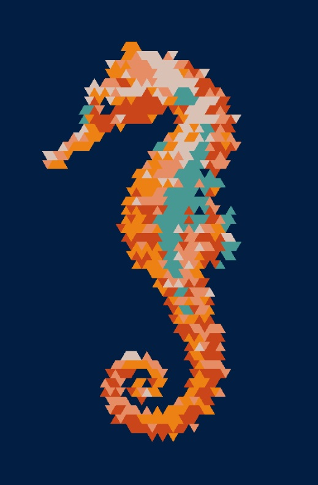
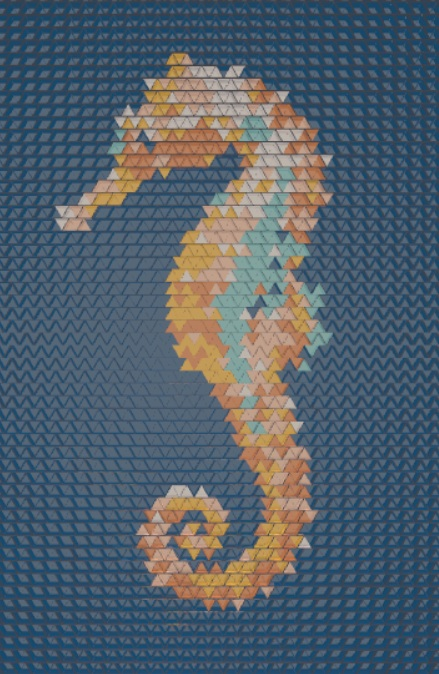
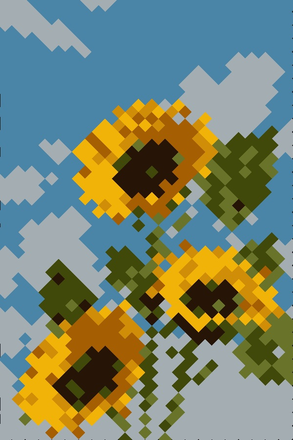
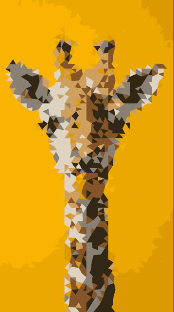
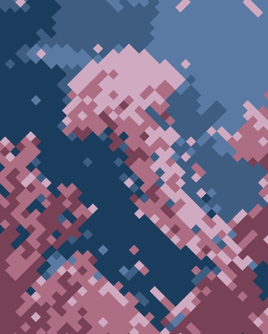

STAINED GLASS
Pick your colours. Pick your pattern. Let the light do the rest.
Stained glass used to be the language of cathedrals and grand estates. We're bringing it back — to your home, your studio, your space. Design your own piece, choose your colours and pattern, and we'll print it. No craft skills needed. No fortune required.
Why do it?
Stained glass used to be the language of cathedrals and grand estates. We're bringing it back — to your home, your studio, your space. Design your own piece, choose your colours and pattern, and we'll print it.
How does it work?
Three steps from idea to light on your wall.



Examples



Make your own art
Upload an image, choose your palette and pattern, then see it rendered as light.